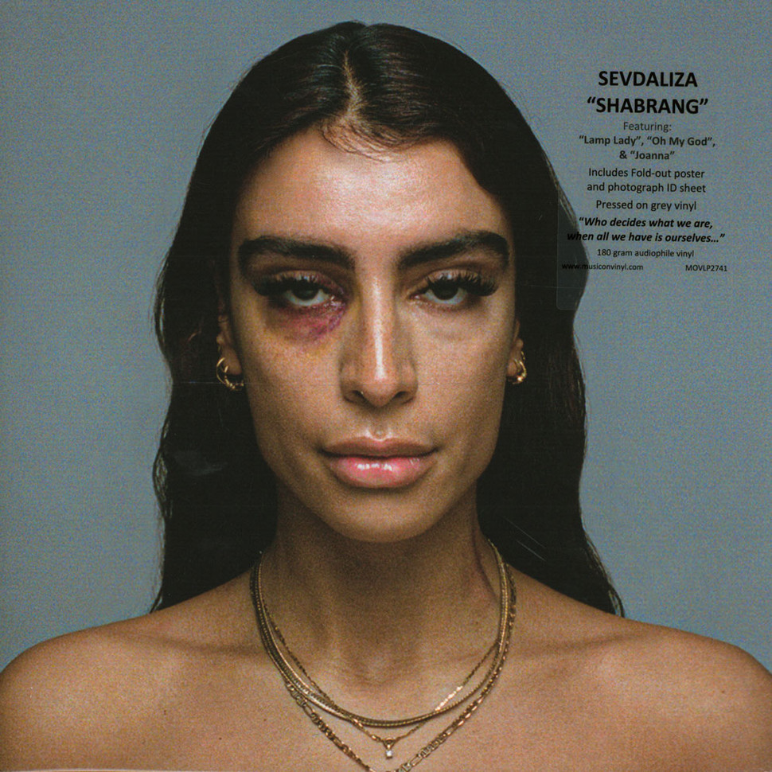
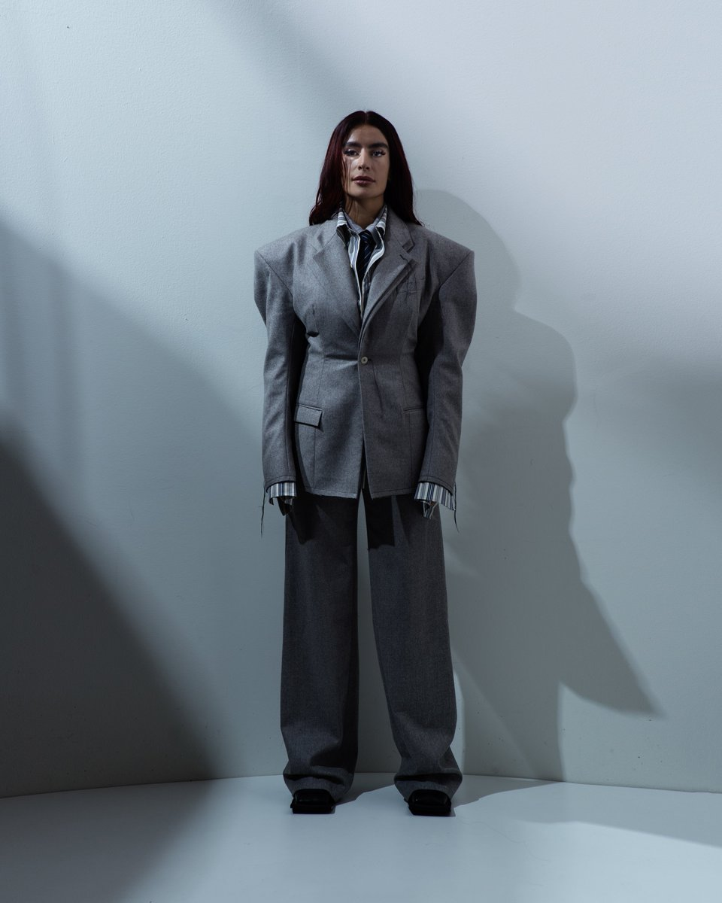

Sevdaliza
Singer, Songwriter, Director, Composer
Born in Iran and residing in the Netherlands, Sevdaliza is a self-taught singer, songwriter, director, and composer. Contrasting husky vocals with cutting strings and bass lines, her melancholic, visceral work draws on various genres including electronic, indie, trip-hop, grime, and the avant-garde. Playing with the simulation of identities and fantasies, her lyrics have a philosophical, questioning character towards subjects like gender diversification and perception emotions. Sevdaliza self-released her debut album ISON. It was followed by a sold-out headline tour through Europe and the US. In 2018, Sevdaliza embarked on her first world tour, while writing her newest work, Shabarang, out in August 28, 2020.
On managing time and energy:
Musician Sevdaliza on balancing artistic mystery with human transparency, developing a voice outside of big cities, how to recharge and refocus, and accepting that work will never be perfect.
Part of:
From a conversation with Lior Phillips
August 24, 2020
How do you ensure you remain present in your work when you’re at a point where you’re ready to release new music? To some degree, does it become a product to you, rather than just your own experience?
I definitely naturally distance myself from it. It’s not only about distancing, but you’re also a bit sick of it when you’re done with it—not sick of it in a negative way, but you need to let it breathe. By letting it breathe, you’re also becoming fine with it being what it is, and you’re not as emotionally attached to it as you were when you were creating it. Finishing the album is also like letting it go, and then I open myself up to the present again. In the present there are the experiences and new creative processes that I need.
Being able to acknowledge and accept something, and then move on, is so challenging. It makes sense logically, but emotionally you grow attached, like a relationship.
For me, it’s actually the opposite. I forget how much I’ve invested in it emotionally. I need to forget, because otherwise you’re constantly being re-traumatized. That’s also why I’m able to deal with criticism.
Your music feels so intimate, like you’re standing with your hands on the listener’s shoulders. But at the same time I don’t necessarily come away from your songs feeling like I’ve looked at your diary. How do you create that balance?
For me, it’s just a natural process. The level of perfectionism that I have is so incredibly high, but when I present something it needs to feel very simple. I have a lot of criticism towards myself and the things that I’m creating before anyone else gets to hear them. I am very stubborn in that I just hold on, and I will chase an idea in a piece of music until it’s there. And when you develop this pattern of actually hitting that point, you develop a trust and belief in yourself that you’ll be able to hit that point again. The first time you hit that point of creating something that you feel is on a level that you want to release it is very scary, fragile, and vulnerable. But when it’s the 75th time that you get there, you think you might be able to do it again.
Is there a song on the new album that achieves that duality best? Or is it a necessity for every song to reach that point before you release it?
Every piece of music that I’ve ever released has at some point hit that point, but also hitting that point doesn’t mean you’re staying at that point. It’s always subjective. Over the years, your vision changes. What I try to do is have that conversation with myself, over and over again, and then when I’m finished with it I accept the fact that I’m then married to that piece of work. Then listening back to it, even if I hear something new, I just guard it. I’m like, “We had that conversation a million times, and we went over it a lot, so trust it.”
That’s why I’ll never be able to create an album within a few days. The Psyche wants to please us; it doesn’t want us to feel bad. And sometimes to get to the right place we need to feel shitty, and we need to feel bad. Trusting in fresh work is one of the most dangerous things you can do. Time is a very, very trustworthy component in the creative process of an artist. If you still like it over the course of days, months, then you might actually like it.
Do you feel that spending so much time on your art helps maintain a sense of mystery? On social media, in interviews, you’re honest and open. You share what is truly important. But how essential is it for you to then retain some part of your art for yourself?
That’s super important, and I’m learning that as well. We all make mistakes, and sometimes you get emotional. You over share, you under share. In the last year, I’ve realized that I need to be real on my social outlets, and not be a constant mystery. I have real feelings, I’m a real human being, but what I do realize is that even in myself being real, I am a real introvert. I am really mysterious, because I don’t even know what I’m thinking most of the time.
My social media is very honest because it’s a reflection of my inner self, the tribulations that I go through, and it’s also a reflection of me being aware of the fact that I don’t know everything. That’s why I don’t always share. I fluctuate so much in learning and evolving. I’ve started to become a little bit more soft with myself. It’s okay to make mistakes. It’s okay sometimes to be emotional, and then reflect on sharing. We do have a responsibility as public figures, even though a lot of public figures say that they don’t. Being a public figure means people look to you for answers, and they don’t really understand that you’re as faulty a human being as they are. So, even if I share something that the next day I regret, I try to be more sweet to myself.
Do you see it as your responsibility to fill the gaps of information that people don’t have?
I think the world demands balance. It’s easier to go about your day judging people instead of looking in the mirror. My belief is that the human being is a fluctuating, evolving species. We’re never the same. That’s why you need to be a little bit more empathic. You feel when people are authentic or if it’s just a marketing trick or they’re politicking. When somebody is genuinely trying to evolve, you see them working through it. It’s so much easier for people to point at public figures instead of realizing that they’re just human beings. Behind closed doors they’ve probably made worse mistakes, but the public has never guessed who did them.
Your new album includes a cover of the song “Gole Bi Goldoon” by Persian artist Googoosh. Do you feel like listeners will want to know your experience, your history, to capture the song’s full weight, and why you chose to cover it?
I’m not sure. But there is this DNA inside of me, and I think that it’s a very natural and nurturing thing in life that sometimes goes back to that place of where it all comes from. When I think in my native language, I feel like I touch that. Singing in Persian, in my native language, there’s a different vibration that I put out, a different use of voice, a different use of tone, but there’s also a different message. There’s so much layering that I don’t even understand. I just had this intuition that I needed to do this.
You’re not the type that steps away from your passion. Your voice is strong, both literally and figuratively. When you’re working on new material, how do you walk that line between the process and your personal life?
It is hard sometimes because in general I’m a workaholic, and when I’m making an album, I’m usually head over heels in work. The life, the cycle of music, during those peaks it’s almost impossible to have balance, because you’re just doing too much. But you need to find the balance afterwards. A lot of artists take a long time to make a new album because they basically need to recover.
When you are not only an artist but also an entrepreneur, that is a 24/7 thing. What I’ve learned is that multitasking is my biggest quality and my biggest enemy, because I always squeeze in something that I need to do, and then I never get a full experience of doing one thing at a time. My life demands that, but it doesn’t mean that it makes me happy. I try to find activities which have no benefit in my work, which have no gain, and I try to do them fully consciously. Swimming is something very simple, where I’m not going to be on my phone for at least an hour. Spending time with loved ones fulfills that. Also, helping others with problems makes you reflect on your own life, and be detached from your own microscopic view on your own life and your problems.
How do you incorporate resources like swimming into your creative process?
I used to come home after sessions of 10 hours, and think, “Oh, great, I have two hours before sleep, I can check emails.” I did that for a few years, and I realized that it’s not normal. I didn’t feel normal. But I’ve become good at switching gears. Now I divide my day into parts, including some where I can switch it off.
I was forced to rest more than my character allows me to, and I realized that after a day of rest I feel so good that I can actually do more efficient and better work. That being said, it doesn’t mean that we are just living to work.
For me, living a meaningful life means finding meaning in things. I find meaning in music and creating stuff. Another part is building functional relationships, both personal and work. If I’m not doing that, if I’m just sitting still, I don’t feel like I’m alive. I can sit still, but not for more than a day.
You didn’t grow up in the industry, or even in one of the big music industry hubs: LA, London, New York. How did you manage to create that path as an entrepreneur, as a musician, outside of that established system?
I figured it out along the way. I’m still figuring it out. I’m now at a stage where I realize I’m not only the artist, I’m also leading a business, and I’m responsible for not only myself but also for others. I cannot let myself down, because I’d let others down as well. I never intended to have a business, I just wanted to create something. But now that it’s here, I do see that it’s in my nature, and that I do have a lot of characteristics that I can apply. I have to work with a lot of people, and I have to collaborate, and I’m under a lot of pressure. But I see this as a building opportunity, because I got this fast-forward education on life and business and culture.
As a musician, you travel the world, you work with so many different people, you’re under a huge amount of pressure and stress, you’re dealing with jet lag, all of these things. It forces you to places that, as a human being looking for comfort, you might never go to yourself, and it forces you to have a lot of epiphanies. I see it as a school of life, and I’m just trying to learn and grow from it as much as I can.
When did you realize then that you would become an artist?
I was very young. I always felt that I was an artist, but I didn’t have a talent that people would say, “You’re so good at this.” Some people are just born and they open their mouth, and you’re like, “Wow, you can sing.” I didn’t have that. I grew up in a village where I definitely dealt with a lot of racism. We weren’t even thinking about this as a possibility, but I always felt that I was an artist. But feeling it and owning it are two completely different processes. Some people know something their entire life, but they will never be able to do it. Then comes the factor of where you’re born, what your environment is like. Are you privileged? To what extent? What did you experience in early life? There are so many micro choices to actually get you to actually being or embodying it. That is a process that takes years.
Where would you say you are now in that process?
I’m weirdly peaceful. The first album is like a huge therapy session. You’re working through something, and you don’t know what it is. You have this urge, but you don’t know why. Everything is painful and weird. Now I know that I have this light, and this work, and I just have to keep remembering it, expanding it, deepening it, going back to it, and spreading it. It’s a more stable phase, for sure.
Did your curiosity shift a lot? How do you expand and deepen your relationship with your previous and current work?
You have to challenge yourself, and I think that is what is so beautiful about art. It’s subjective, so you can always challenge yourself. It’s never finished, never good or bad. With this album, I was naturally a lot more involved in the production, because it was just easier for me. I was able to expand my singing more, because my range got bigger and I experimented more with my use of voice. I experimented a little bit with incorporating elements that I might have found not puristic enough. I tried to be authentic, while using elements that I might have not called authentic before.
What are the rewards of your creative practice? What do you get out of this work that you make, and how do you make sure that it teaches you about yourself?
A lot of people that create things do so because they’ve been through something. In my case, it’s because I’ve never felt accepted in any world I’ve stepped into. I’ve never felt accepted amongst people I grew up with, or even any kind of subculture community. That outlier feeling turns into you wanting to create your own safe space. At first you’re just doing that, and a lot of the times you’re not really aware of what you’re doing. But your work is your own therapy. When I look back at my own work, I see everything that I worked through. The basic need of any human being is to be loved, seen, and accepted. One thing that a lot of people that become very successful in business have in common is that they have not been seen, loved, or accepted in their younger years. That drives you, and depending on what you’re good at, where you’re born, your privilege situation, you’re able to build something from that.
Sevdaliza Recommends: